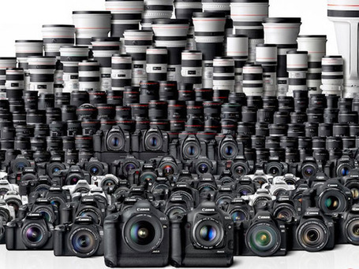

Suggestions on creating or finding videos and images for content
You will need to have a video file or images before creating an animated GIF. Knowing what you want to use to create an animated GIF will make the process easier.
You can create your own images and videos. To create you own content, you can take videos or images from your daily life, events, or memorable moments. Videos can be taken from cameras, videocameras, phone cameras, and webcams.

Using content of from television or film is also another way to create reaction GIFs or GIFs that loop a moment. Depending on the type of method you use to create an animated GIF, you may have to convert videos to your desktop.